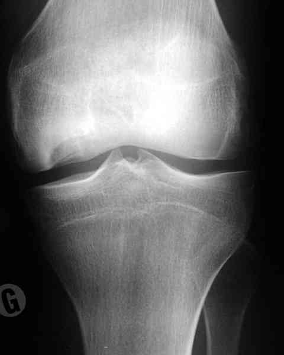
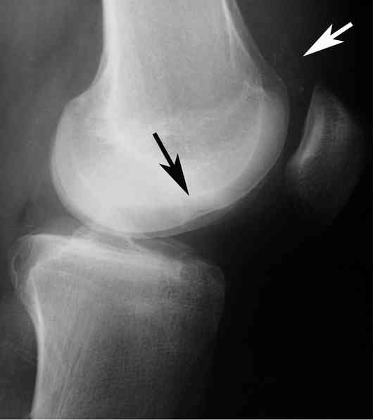
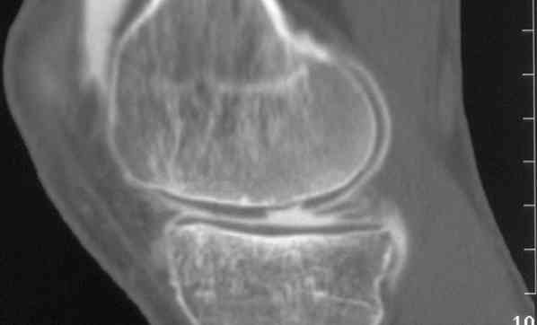
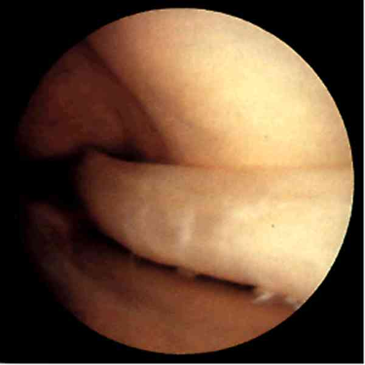

Bienvenue Sur Medical Education
Lésions méniscales
Spécialité : traumatologie /
Points importants
Deux types de lésions
- Ménisque interne
-
Ménisque externe : 5 fois moins fréquentes
Présentation clinique / CIMU
SIGNES FONCTIONNELS
-
Douleur de l'interligne
CONTEXTE
Antécédents
- ATCD d'entorse
Circonstances de survenue
- Soit flexion forcée associée à une rotation
- Soit choc direct
EXAMEN CLINIQUE
_917
- - -
Lésions méniscales
Ménisque interne
Le diagnostic peut se poser devant 2 tableaux :
Ménisque externe
En cas de blocage aigu

_414
Photo
Ostéochondrite du condyle interne du genou droit : face

_415
Photo
Ostéochondrite du condyle interne du genou droit : profil
Signes paracliniques
MENISQUE INTERNE
En cas de douleur de l'interligne interne
- Des radiographies debout en schuss et en extension doivent être systématiques après 45 ans, pour éliminer une arthrose fémoro-tibiale interne débutante dont la lésion méniscale éventuelle pourrait en être la conséquence
-
Si ces radios sont normales, on pourra demander :
- une IRM chez les moins de 45 ans pour confirmer le diagnostic
- et un arthro-scanner chez les plus de 45 ans (supérieur à l'IRM pour évaluer l'état du cartilage)
 _417
Photo
IRM : lésion du ménisque interne
_417
Photo
IRM : lésion du ménisque interne
 _418 Photo Arthro-scanner : lésion du ménisque interne
MENISQUE EXTERNE
- Idem ménisque interne
Diagnostic étiologique
-
Entorse du LLI lorsque la lésion ligamentaire siège en son milieu (exceptionnelle)
-
Tendinite de la patte d'oie (encore plus rare)
Traitement
MENISQUE INTERNE
Traitement
MENISQUE INTERNE
En cas de blocage aigu
-
Si chirurgien disponible :
- arthroscopie en urgence (IRM inutile), pour ablation ou suture méniscale
 _416 Photo Arthroscopie : anse de seau luxée du ménisque interne
-
Si chirurgien non disponible :
-
tentative de déblocage par un mouvement de valgus-rotation-interne et/ou externe :
- si déblocage : consultation avec chirurgien orthopédiste après quelques jours
- si absence de déblocage : antalgiques, AINS, décontracturants. En général le genou se débloque tout seul en 2 ou 3 jours
-
tentative de déblocage par un mouvement de valgus-rotation-interne et/ou externe :
- Dans tous les cas un avis chirurgical s'impose, mais il n'y a pas d'urgence et le rendez-vous peut être pris dans la semaine
En cas de douleur de l'interligne interne
-
On débute par un traitement médical :
- AINS
- antalgiques
- repos
MENISQUE EXTERNE
-
La conduite à tenir est la même que pour le ménisque interne
-
Cependant, il faut savoir que la méniscectomie externe donne de moins bons résultats que la méniscectomie interne (75% versus 90% de bons résultats)
Bibliographie
-
Traumatologie à l'usage de l'urgentiste. Sous la direction de Dominique Saragaglia. Editions Sauramps Médical. 2004
Auteur(s) : Jean-Jacques BANIHACHEMI, Dominique SARAGAGLIA